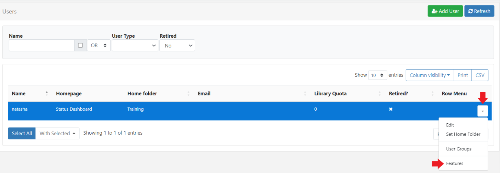
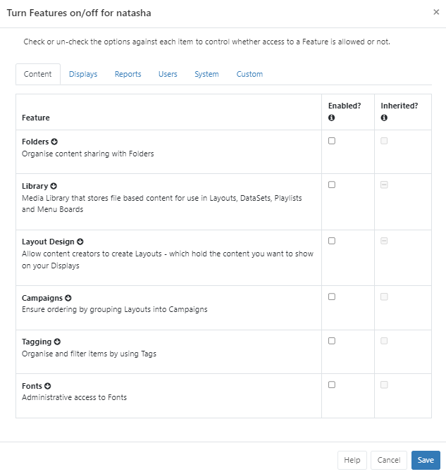
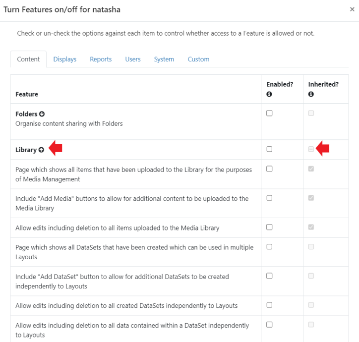
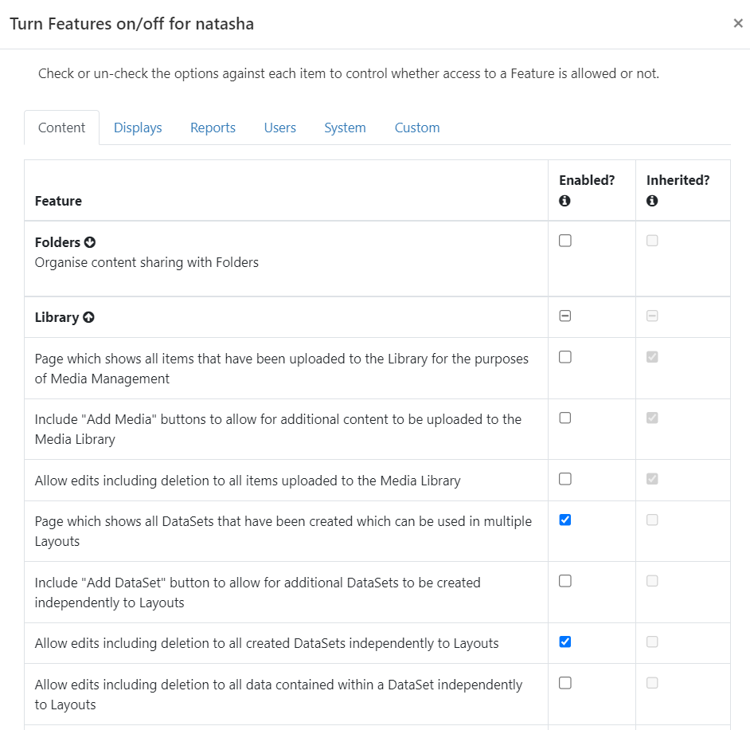

Features and Sharing
Access to the CMS for all system objects and User objects is controlled for Users/User Groups using two concepts:
- Features - control what a User can see and do within the CMS (system objects)
- Share - controls View, Edit and Delete options for user objects such as; Folders, Media, Layouts, Displays/Display Groups. (User objects)
When used in conjunction with each other, these concepts ensure that only the relevant parts of the CMS are visible to Users/User Groups with the appropriate level of user interaction applied.
Features
Features are used to set the required access within the CMS for Users by restricting pages and page functionality (controlling what a User can see and do in the CMS).
We recommend utilising User Groups in order to set the required Feature access for multiple Users within the CMS and then adding Users to this group who will then inherit enabled Features for an easier and safer work flow with less room for error.
If you need to give further access to specific Users within User Groups, assign these directly to the User.
- Features are configured from the row menu for Users or User Groups:

Features have been grouped into logical tabs to make it easier to control the appropriate areas of access:

An Inherited column is shown when viewing Users to indicate if a Feature has been inherited from an existing User Group membership.
A - shown in a column for a Feature tells you that that only selected Features within that Feature Set have been enabled. Expand a Feature using the arrow to see all available Features within the set:

A tick tells you that all the Features within that set have been enabled.
- Click in the Enabled column to turn on the required Features for the User/User Group.

Make it easier to onboard new Users by using the predefined User Groups which already contain the appropriate Feature access for the type of User.
Share
Share options are used to set View/Edit/Delete options for User objects within the CMS for Users (controlling the level of interaction for an item, such as a Layout or Media file, for a User).
Set Share options on Folders (Recommended)
The easiest and quickest route is to create and use Folders to set the necessary access rights directly to the Folder which means you do not have to set multiple options for multiple items individually. All objects that are contained or later moved into the Folder will automatically inherit the View/Edit/Delete options set for Users/User Groups.
-
Create a Folder
-
Set Share access for Users to apply to all objects contained within the Folder.
-
Move/Save objects into the Folder which Users need to access by using the row menu for selected items and click Select Folder or select the Folder when creating/uploading an item.
NOTE: Share options for Folders can only be set by a Super Administrator.
Set Share options on objects
Access rights for a User can also be assigned directly from the object itself:
-
Use the row menu for the object and select Share.
-
Use the form to enable/disable View, Edit and Delete options for Users (User Groups are shown in bold).
When logged in, a User will only see a list of other Users from their own User Group on clicking Share. A Super Admin User will see all Users in the system.
Sharing options for Widgets are assigned using the context menu in the Layout Editor!
Scenario:
All members of a User Group need to edit DataSet data with only one specific User able to Delete the data:
- Use the row menu for the User Group and select Features.
- From the Content tab expand the Library Feature set.
- Enable the checkbox for ‘Allow edits including deletion to all data contained within a DataSet independently to Layouts’.
- Move the DataSets to a Folder which has been shared with the User Group (View and Edit options enabled so the DataSets will inherit those options) or use the row menu for each DataSet and select Share to enable View and Edit options for the User Group.
- Tick Delete for the User (View and Edit are already enabled for the Group so do not need to be ticked for the User).
The highest editing level will always be used for Users. If a User belongs to two groups where one group has Delete enabled for an object and the other does not, the User will have Delete access for the object.
Modifications made to items are available in ‘real time’ which means that the next time a User interacts with the object the newly set options will be applied.
Use With Selected at the bottom of Grids to perform bulk actions with Sharing.
Share options on a User Object can be changed by the owner, Group Admin or a Super Administrator.
Share options for Displays and Display Groups, that have no owner, can only be changed by a Super Administrator.